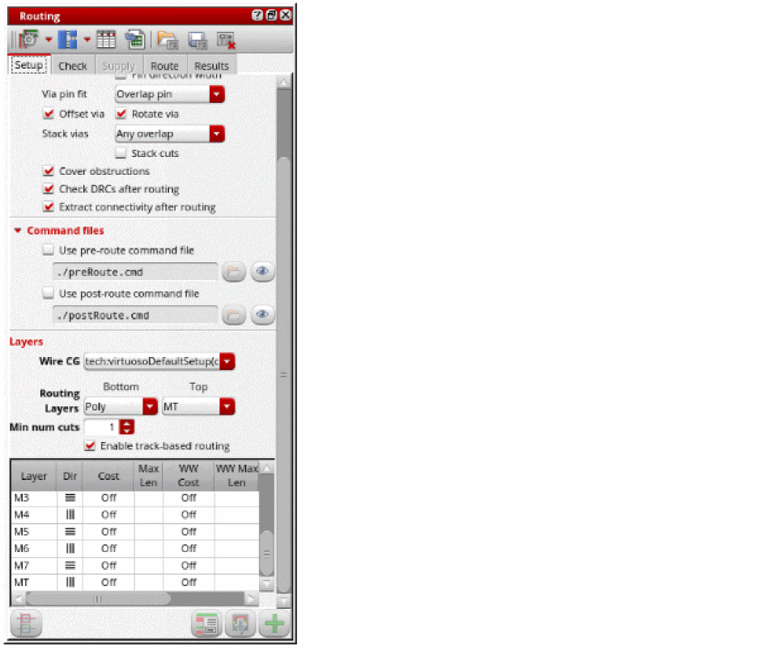

Accessing the Routing Assistant
To display the Routing assistant:
- Start Virtuoso and launch Layout MXL.
-
Choose Window – Assistants – Routing Assistant.
Alternatively, right-click anywhere on the layout window menu bar and choose Assistants – Routing Assistant.
The Routing Assistant is added as a docked assistant to the current layout window. By default, the Routing Assistant is positioned to the right in the session window.

To hide the Routing assistant, do one of the following:
- Click the Hide button in the Routing Assistant title bar.
- Right-click anywhere in the layout window menu bar and choose Assistants – Routing.
- Right-click anywhere in the assistant’s title bar and choose Routing.
Related Topics
Loading, Saving, and Deleting a Routing Preset
Routing Assistant User Interface for Chip Assembly Routing Flow
Return to top